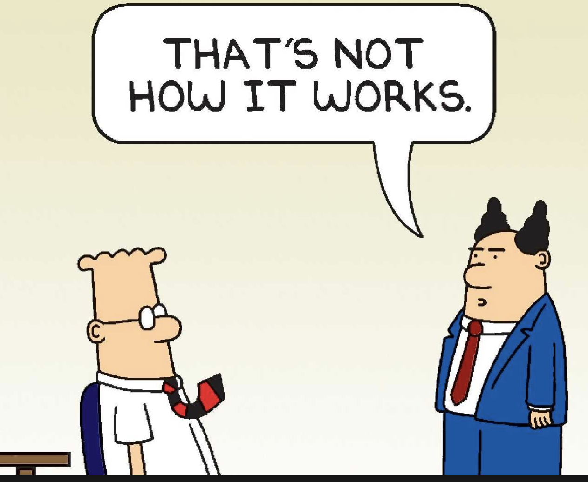
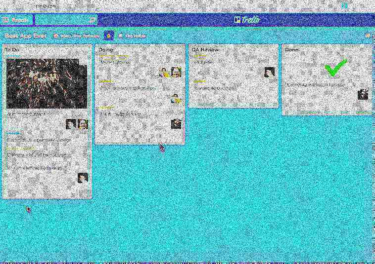
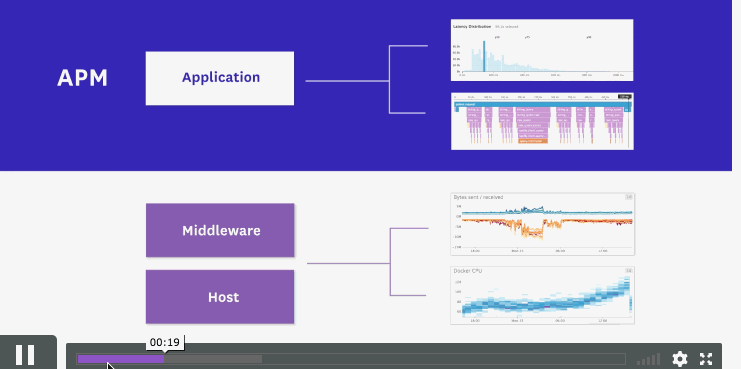
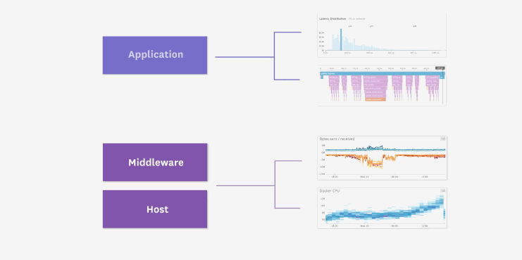
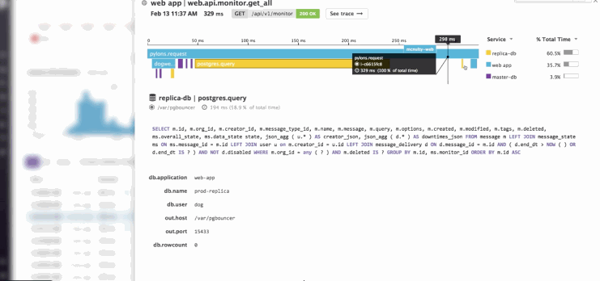

hi
this is our talk
its about software
but really its about life

the life of living with software

first
im dan
im matt
we work in software


we are a happy place

people love working here

they are very happy

and content with their jobs

our customers love us

we are very stable

our apis are clean and widely loved

being a software engineer is great too
the workplace is very safe
you get to be on the computer all day
which is what you would be doing anyway
some engineers work in open offices
some work in closed offices
you get to work with huge nerds
no one showers

managers are dumb

computers are hard
no one talks to you
this one might be a perk
yeah, strike that one off dan
no one talks to you
thanks matt
KANBAN

lots of talk about agility
and sprints
but cardio is hard
people think you fix printers
people ask you to fix printers
you end up fixing printers
deadlines are unreasonable
code reviews can be traumatic


waterfall doesnt work
insert agile joke here
PAUSE FOR CHANGEOVER
ok, so software engineering sucks
but software is good, right?
we write a lot of python & go at Datadog
lets talk about python
>>> True == False
False
>>> 2 ** 8
256
>>> True ** False == True
True
wat
>>> 1 ** 0 == 1
lets talk about python
>>> type(1) == type(-1)
True
>>> 1 ** 1 == 1 ** -1
True
>>> type(1 ** 1) == type(1 ** -1)
False
wat
>>> type(1 ** -1) == float
True
lets talk about python
>>> a = ([],)
>>> a[0].extend([1])
>>> a[0]
[1]
>>> a[0] += [2]
Traceback (most recent call last):
File "<stdin>", line 1, in <module>
TypeError: 'tuple' object does not support item assignment
>>> a[0]
[1, 2]
wat!?!?!
lets talk about go
package main
import (
"math"
"fmt"
)
func main() {
a := math.MaxUint64
fmt.Println(a)
}
# command-line-arguments
./main.go:9:4: constant 18446744073709551615 overflows int
wat
lets talk about go
func err1() error {
var err error
fmt.Println(err == nil)
return err
}
func main() {
err := err1()
fmt.Println(err == nil)
}
true
true
no wat this makes sense

type MyError string
func(me MyError) Error() string {
return string(me)
}
func err2() error {
var err *MyError
fmt.Println(err == nil)
return err
}
func main() {
err := err2()
fmt.Println(err == nil)
}
true
false
nil is a tricky beast
Null References: The Billion Dollar Mistake
package main
import "fmt"
func main() {
true := false
fmt.Println(true)
}
false
wat
so software is complicated
and convoluted
it ages quickly
and constantly reinvents itself
PAUSE FOR SECOND CHANGEOVER
what did we learn
all software is terrible
at datadog we help make software reliable
with state of the art monitoring and observability tools
you can run software with piece of mind



If you want more info
jc@datadoghq.com